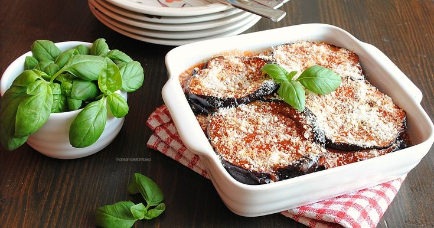

Odin Recipes - Masterchef Edition™

Sicilian Eggplant Parmesan
Indulge in the rich flavors of Sicily with our Sicilian Eggplant Parmesan, a classic dish that showcases the region's culinary mastery.
This savory and satisfying recipe combines the earthy goodness of eggplant with layers of robust tomato sauce and melted cheese, creating a symphony of flavors that dance on your taste buds.
ingredients:
- 3 medium-sized eggplants
- Coarse salt
- Extra virgin olive oil
- 800g canned peeled tomatoes (or tomato passata)
- Fresh basil
- Salt and pepper to taste
- 200g caciocavallo or Parmesan cheese, grated
- Vegetable oil for frying
For Bechamel Sauce (optional)
- 50g butter
- 50g all-purpose flour
- 500ml milk
- Salt, pepper, nutmeg to taste
Steps:
Preparing the Eggplant:
- Wash and slice the eggplants into approximately 1cm thick slices
- Arrange the slices on a tray and sprinkle them with coarse salt
- Let them sit for about 30 minutes to draw out the bitter juices
- Rinse the eggplant slices under running water and pat them dry with a kitchen towel
Frying the eggplant:
- in a large pan, heat a generous amount of vegetable oil
- Fry the eggplant slices until golden brown on both sides
- Place the fried eggplant on paper towels to absorb excess oil
Preparing the tomato Sauce
- In a saucepan, heat a drizzle of olive oil and add the canned peeled tomatoes or tomato passata
- Add fresh basil, salt and pepper to taste
- Cook the sauce over medium heat for about 20-30 minutes
Making bechamel sauce (Optional)
- In a saucepan melt butter over medium heat
- add flour and stir until a smooth mixture is formed
- Gradually add milk while stirring continuosly to avoid lumps
- Cook the bechamel until it thickens, and season with salt, pepper and nutmeg to taste
Assembling:
- In a baking dish, layer fried eggplant slices, tomato sauce and grated cheese
- If using Bechamel, add a layer between the eggplant and tomato sauce
- Continue layering until all ingredients are used ensuring the top layer is cheese
Baking:
- Bake in a preheated oven at 180° for about 30-40 minutes or until the top is golden brown
Serving:
- Allow the Eggplant Parmesan to rest for a few minutes before slicing
- Serve it warm, perhaps garnished with fresh basil